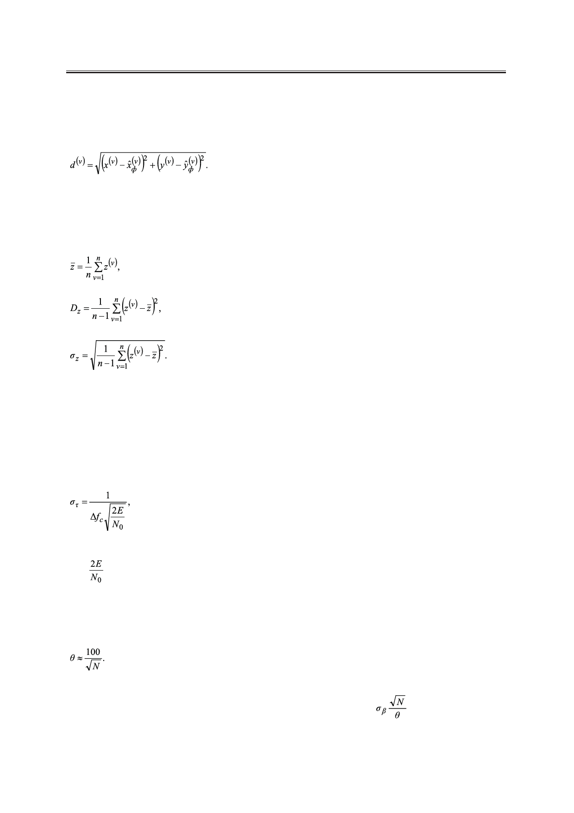

Линейная фильтрация выходных данных в охранной однопозиционной системе
Чтобы дать обобщённую оценку ошибки фильтрации, целесообразно рассмотреть
расстояние между истинными значениями координат и значениями, полученными в ре-
зультате фильтрации:
(31)
Ввиду того, что величины (30) и (31) являются случайными, для численных оценок
качества фильтрации возьмем числовые характеристики статистических распределений
– выборочное среднее, исправленная выборочная дисперсия и исправленное выборочное
среднеквадратическое отклонение [6]:
(32)
(33)
(34)
В (32) – (34) в качестве z могут выступать либо точечные ошибки (30), либо рассто-
яние (31). Суммы в (32) – (34) обычно ограничиваются n – числом импульсов за время
наблюдения.
Среднеквадратические отклонения измерений временной задержки и пеленга
(СКО). СКО измерения задержки στ могут быть рассчитаны по формуле потенциальной
точности [5]:
(35)
где ∆f – ширина спектра эхосигнала;
– энергетическое отношение сигнал к шуму.
СКО измерения пеленга σβ определим в соответствии с [7]. В антенной решетке для
карандашного луча количество излучающих элементов N связано с шириной луча θ на
уровне 0.5 по мощности выражением:
(36)
С помощью (36), согласно графикам, которые были построены П. Сверлингом [7],
найдем σβ. График представляет собой зависимость величины
от отношение сиг-
нал/шум (ОСШ) в дБ для флуктуирующей и нефлуктуирующей цели. Следовательно,
задаваясь числом излучающих элементов N, можно определить σβ для различных ОСШ.
20
Российский технологический журнал 2017 Том 5 № 5